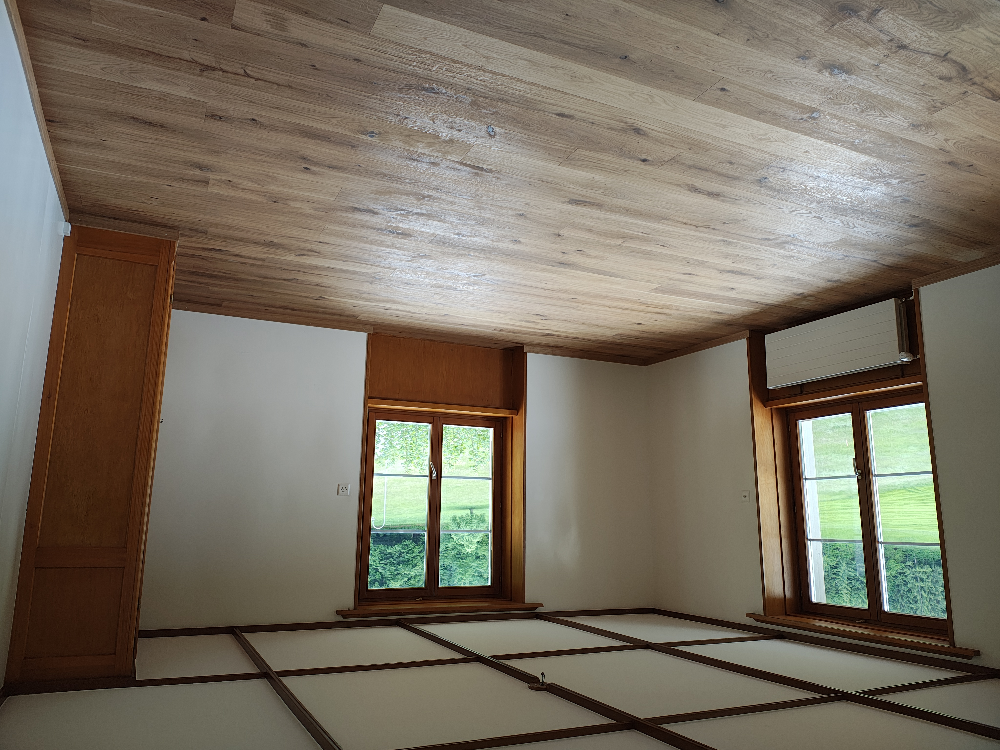
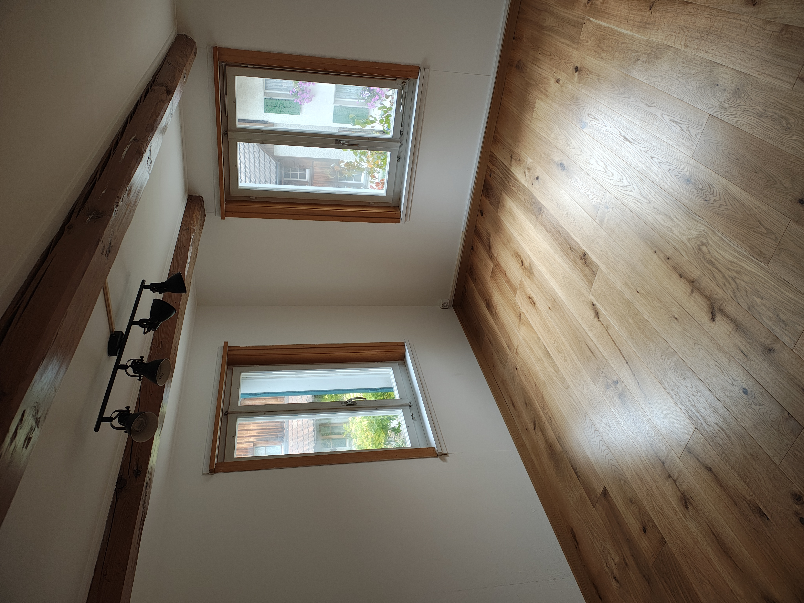
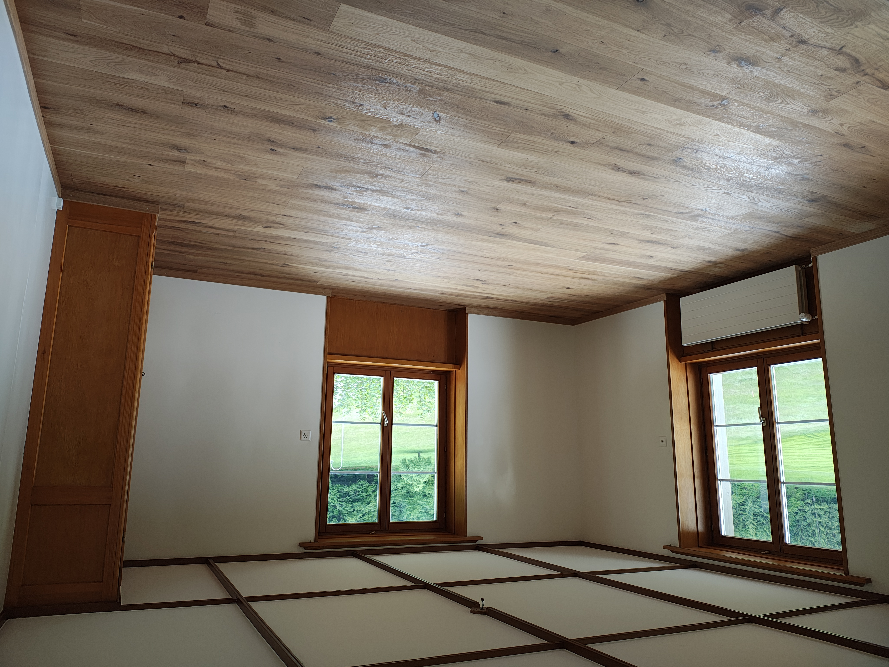
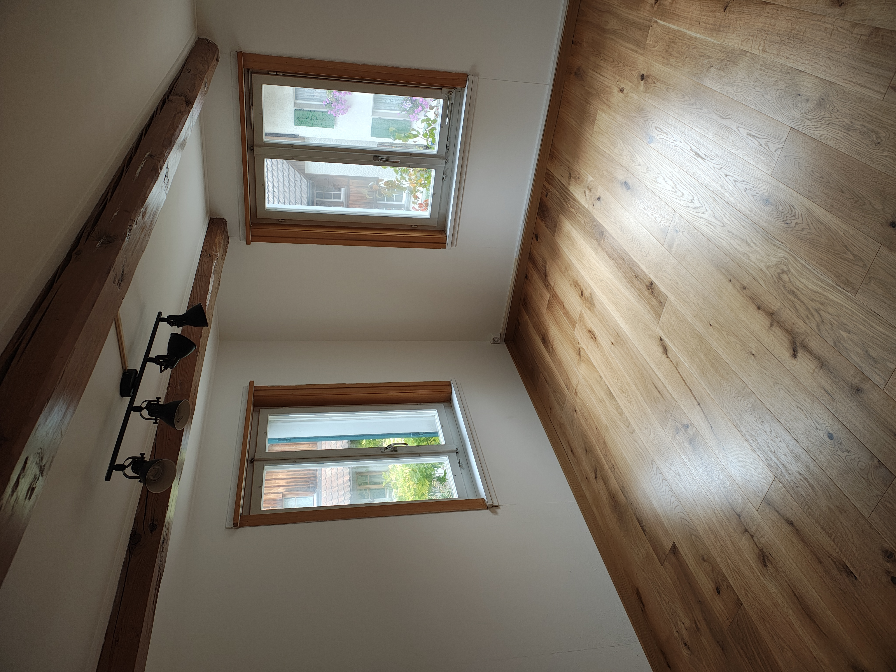

Parkett & Bodenbeläge
Verlegung von Parkett, Laminat oder anderen Holz- und Designbelägen. Wir bereiten den Untergrund fachgerecht vor, gleichen Unebenheiten aus und achten auf saubere Anschlüsse an Türen, Treppen und Sockelleisten.
Je nach Situation beraten wir zu passenden Aufbauhöhen, Trittschall- dämmung, Feuchtigkeitssperren und geeigneten Belagstypen. Auf Wunsch übernehmen wir auch den Rückbau alter Bodenbeläge sowie das Montieren von neuen Sockelleisten.
Bilder zu Bodenbelagsarbeiten
 



Video zum Projekt (optional)
Falls es ein Vorher/Nachher- oder Zeitraffer-Video zu Bodenbelagsarbeiten gibt, können wir es hier einbinden. Ersetze dazu die ID im YouTube-Link unten.